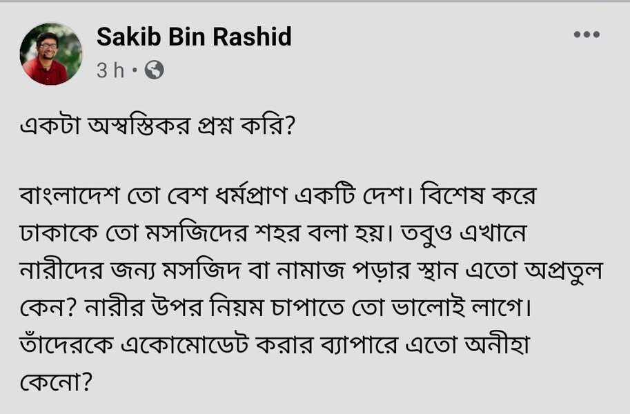

কারও কাছে এ প্রশ্নের জবাব আছে?
৮ মার্চ, ২০২১
কারও কাছে এ প্রশ্নের জবাব আছে?
কবে এ দেশের মুফতিদের শুভবুদ্ধির উদয় হবে। আল্লাহ মালুম। সেই যুগে ইমাম আবু হানিফা রাহ. নারীদের মসজিদে যেতে নিষেধ করতেন। বিশ্বাস করেন, যদি তিনি এ যুগে নারীদের অবাধ বিচরণ আর সর্বত্র উপস্থিতি দেখতেন, তবে মসজিদে যাওয়ার অনুমোদন তাদের অবশ্যই দিতেন। প্রেক্ষাপটের ভিন্নতায় ফতোয়া ভিন্ন হয়- এ জিনিসটাই বাঙলি মুফতিদের মাথায় আজও ঢুকলো না। তবে কি নারীরা এখন আন্দোলন করে তাদের ধর্ম পালনের অধিকার আদায় করতে হবে?!
রাসূল সা- বলেন-
لا تمنعوا إماء الله مساجد الله.
আল্লাহ'র বান্দিদের আল্লাহ'র মসজিদে যেতে নিষেধ করো না।
